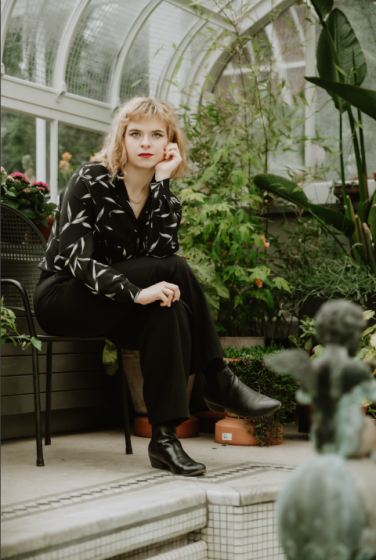

|
I am always hungry to learn new skills and knowledge and apply these learnings to my practice. My curiosity explains my desire to learn as many art disciplines as possible. I combine various approaches from different practices to create pieces through the lens of storytelling. By blending long-established disciplines and digital techniques, I aim to query mediums, ecosystems, and human-computer interaction by exploring and subverting the techniques and materials’ affordances. As I explore and try various combinations between disciplines, my work has no recurring format, medium, or support. The projects can be web-based, installations, virtual reality, video-based or still images. I will use a specific format according to the themes and subjects of the project. Influenced by fauvism, I bring painting-like gestures and vibrant colours to my digital visual identity. The plurality and diversity of my work reflect my desire to understand the layers and possibilities of mediums and queries. My projects involve a certain amount of immersion and interactivity. Users might experience a physical distance from the subject, while others might immerse themselves in the narrative. It allows the users to engage and participate in the narrative, connecting on a deeper level with the work. |
|
Cassandra Rousseau (she/her) is a multidisciplinary designer born in Montreal who practices design, visual and performing arts. She developed a passion for arts at a young age, exploring different practices since elementary school. She pursued Visual Arts at Cégep du Vieux-Montréal where she obtained her college diploma. With the desire to develop a technology-based practice, she studies at Concordia University for a BFA in Specialization in Computation Arts. Her proficiency in UX and UI brought her to work as a Communication Support Officer for Canada Economic Development for Quebec Regions. Within the scope of her profession, Cassandra Rousseau overlooked and took charge of information architecture for the Intranet and Internet. Aside from her civil servant duties, her digital dexterity and mastery of colour theory brought to design an emerging singer’s visual identity, Enzo Leo, as a graphic designer. Beyond the scope of her digital practice, her passion for performing arts grew during her undergrad years. She graduated with a minor in Theatre and joined the Fusion Latin dance crew FierceMTL. Her experiences, expansive creativity, and critical thinking led her to introduce herself in the exhibition Strata: Design and Computation Arts Year-End Show with an adventure game named Missing Sister (2023). These experiences in various art disciplines led Cassandra Rousseau to bring her all-embracing knowledge into her practice by creating multidisciplinary and interdisciplinary projects—embedding performance skills and structure into the computational and visual space. |
 |
Contact Me
|